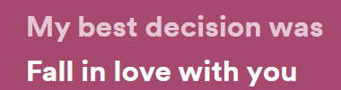
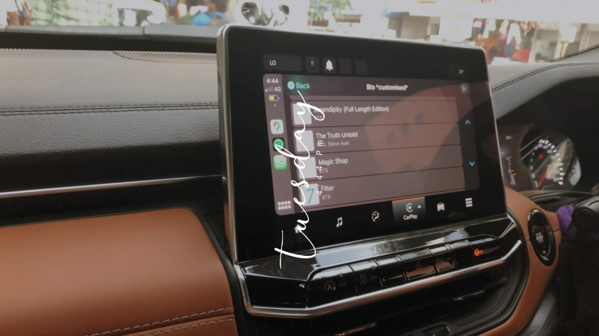
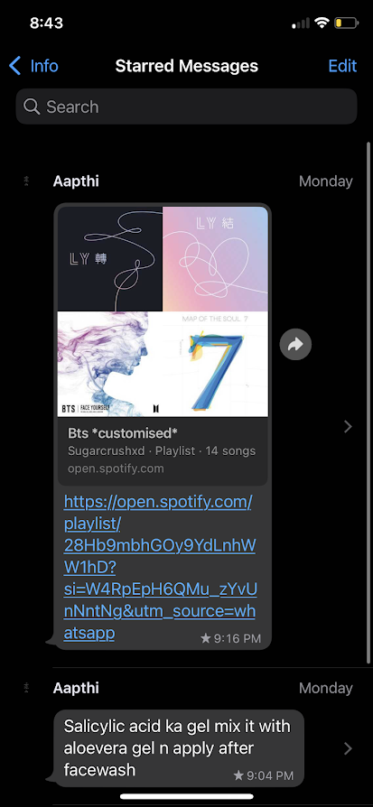
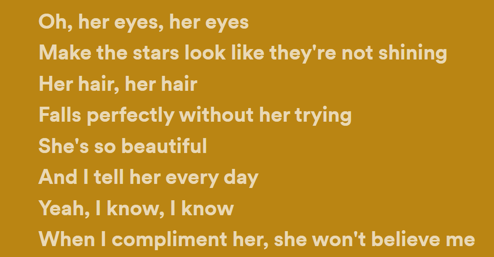

CHEER UP BISH YOU'RE SO FCKIN AWESOME
You're prolly sleeping rn as I make this (dont worry didnt take long, I'm quick at this so dont be like "gO sTuDy" lmao) but here's a bunch of songs/playlists that remind me of you or just happen to mean a lot to me ✨
This 1 and a half min song just has such good vibes with the most basic but heart touching lyrics innit? And quoting the song -

I remember sharing this song with you back when we first started talking and you liked it wayy to much, didnt you? So much so that it made it to your insta story hehe
Ofcourse this playlist made it here, afterall you made it when I asked you for recommendations. I cant describe that feeling in words 🥲
 I still have it pinned on spotify mobile

I made you one too (I know you remember - )
This song made it here because its just sooo relatable, mf I always tell you, you're perfect as you are but you always think you're lacking -_-
 ✨Cause girl, you're amazing
Just the way you are✨
• 14 feb 2023,
happy valentine's day my love ♡